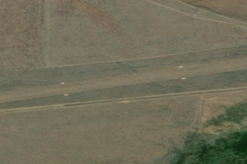

ANTELOPE VALLEY
U92 · ID

Aerial imagery source: Esri, Vantor, Earthstar Geographics, and the GIS User Community
| Identifier | U92 |
|---|---|
| State | ID |
| Runway length | 3,450 ft |
| Runway width | 130 ft |
| Surface | TURF |
| Runway | 07/25 |
| Elevation | 6,193 ft |
| Ownership | public |
| CTAF | 122.9 |
| Coordinates | 43.67713888, -113.60272222 |
Notes
[idaho_itd] State Airfield [shortfield] Location Overview Antelope Valley Airport (U92) sits about 12 miles southwest of Moore, Idaho, near the small community of Grouse, in the Antelope Valley along the Big Lost River drainage in east-central Idaho. It lies within striking distance of Arco, Mackay, and U.S. Highway 93, in a high mountain valley ringed by rugged terrain, with the well-known Copper Basin airstrip nearby to the north. The field sits at roughly 6,180–6,190 feet elevation and features a single turf runway a little over 3,400 feet long, oriented northeast-southwest. Camping & Recreation There are no developed camping facilities documented at the strip itself, but its backcountry setting makes it a popular stop for fly-in camping trips, and dispersed camping is common in the surrounding public lands typical of this part of the Lost River region. The Big Lost River offers fishing nearby, and the valley's open rangeland and mountain scenery draw hikers and hunters. Many pilots pair a visit here with a stop at nearby Copper Basin (0U2), Idaho's highest airstrip, as part of a broader backcountry flying circuit through the area. Notes & Warnings This is a high-density-altitude field, so pilots are advised to carefully check aircraft performance before landing. The recommended pattern is to land on Runway 05/07 and depart on Runway 23/25 to work with the surrounding high terrain. Runway edges and the threshold are marked with white rock rather than standard markings, and pilots should watch for a powerline, a house, and hay bales positioned near the short final approach to Runway 23. There is no runway lighting, no fuel available, and no winter maintenance, so the field is best suited to fair-weather, daytime operations by pilots experienced in mountain and backcountry flying. History Like many of Idaho's backcountry airstrips, Antelope Valley grew out of the state's long tradition of using small mountain airfields to support ranching, hunting, and access to otherwise remote high-desert and mountain valleys long before modern roads reached them. It is state-operated today, maintained as part of Idaho's network of public backcountry landing strips that keep places like the Big Lost River valley accessible to general aviation. Along with neighboring strips such as Copper Basin, it has become something of a rite of passage for pilots training in Idaho's demanding mountain-flying environment, valued as much for the flying experience it offers as for the access it provides to this quiet corner of the state.